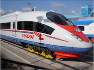

Мне купили паровозик,
Сразу два вагона возит.
Я включу его, и он
За слбой везет вагон.
Вот бы мне в нем прокатиться,
Только жаль- не поместиться.

Нарисую я альбоме
Голубое море,
Белый парус над волною
Бьется на просторе.